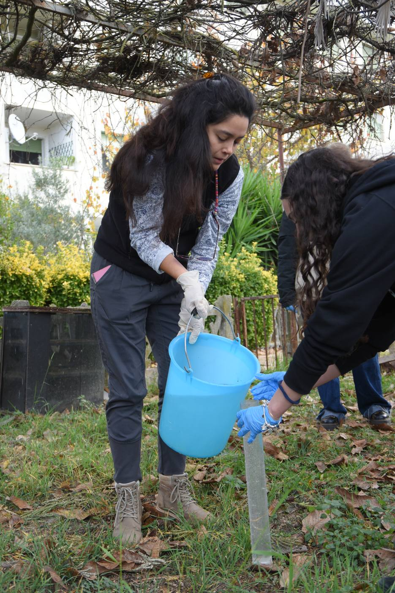
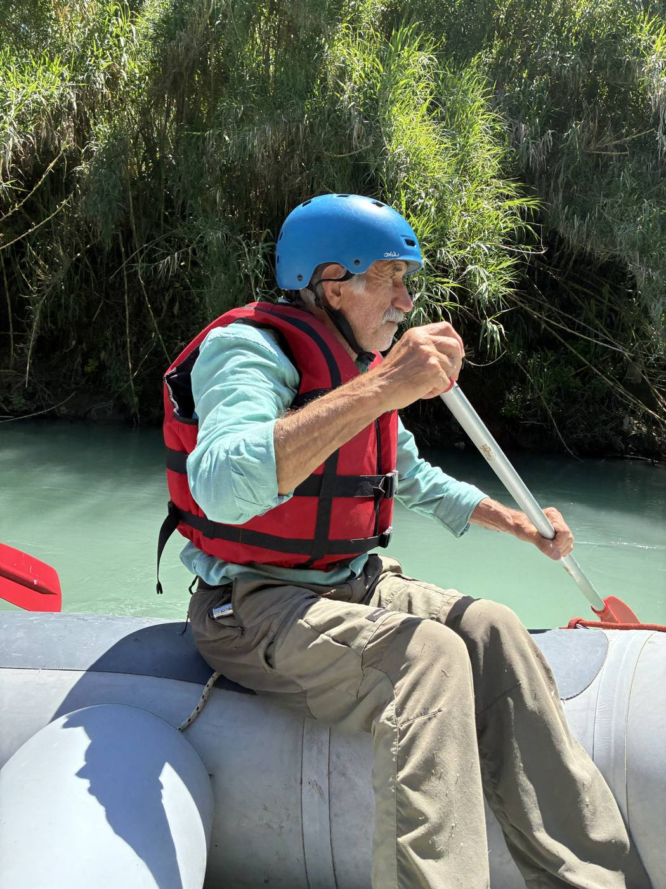
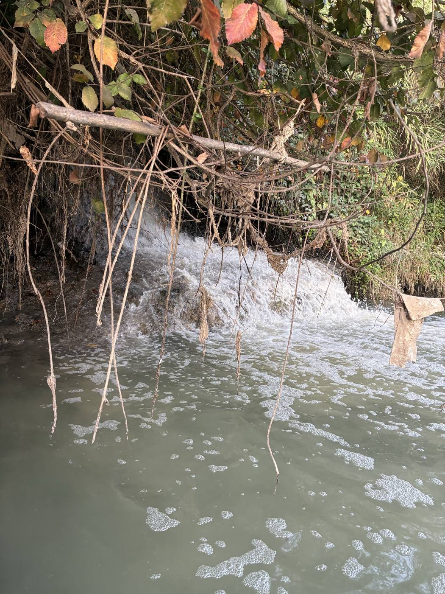
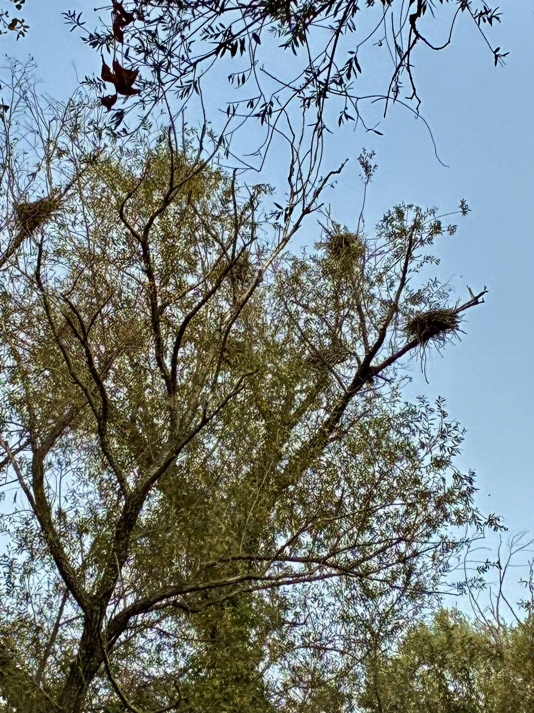

Da dove in poi il fiume non è più balneabile?
Scegli Escherichia coli e la vista *Profilo*: i punti si allineano da monte a valle e si vede a occhio dove la colonna supera la linea delle 1.000 UFC, il limite di balneabilità.
Campagna di monitoraggio
La rete di monitoraggio partecipato lavora su due fronti: i punti fissi campionati ogni mese da terra e le discese in gommone, che raggiungono gli scarichi e le immissioni nel fiume.

Nel 2025–2026 il monitoraggio riprende in 9 punti fissi, dall'alto corso a Subiaco fino alla confluenza nel Tevere, con campionamenti mensili fatti sempre negli stessi luoghi e con lo stesso protocollo. A questi si affiancano le campagne in gommone, pensate per campionare direttamente là dove il fiume incontra scarichi, fossi, impianti di sollevamento e immissioni, che da terra non si vedono.
Due modi diversi di fotografare lo stato di salute del fiume, con un obiettivo comune: raccogliere dati indipendenti, segnalare le criticità e sollecitare le verifiche ufficiali.
Sezione 1
Da ottobre 2025 a ottobre 2026 abbiamo campionato ogni mese le stesse nove stazioni, da Subiaco a Ponte Salario, misurando in ogni punto temperatura, pH, conducibilità elettrica, torbidità, ossigeno disciolto, ammonio, nitrati, fosfati, Escherichia coli e coliformi fecali.
Le stazioni sono le stesse della campagna 2023-2024, con l'aggiunta della Tenuta del Cavaliere: questo permette di confrontare direttamente le due annualità e di capire se e dove la situazione sta cambiando.
Scegli un parametro per vederne l'andamento in tutte le stazioni. Le linee orizzontali sono le soglie di qualità: passandoci sopra con il mouse compaiono il valore, cosa significa superarle e le possibili cause.
La dashboard serve a farle delle domande: dove peggiora il fiume, quando è successo, quali punti superano le soglie di legge. Si muove in quattro mosse.
Scegli Escherichia coli e la vista *Profilo*: i punti si allineano da monte a valle e si vede a occhio dove la colonna supera la linea delle 1.000 UFC, il limite di balneabilità.
Scegli ammonio e la vista *Andamento*, poi lascia acceso un solo punto. I picchi isolati raccontano un episodio; una riga sempre alta racconta un apporto continuo.
Scegli ossigeno disciolto in *Andamento* e tieni accesi due o tre punti: l'acqua fredda trattiene più ossigeno, quindi un calo estivo è normale, un calo invernale no.
Scegli conducibilità e la vista *Mappa*: i cerchi si colorano per livello e si individua subito il tratto in cui il valore cambia bruscamente rispetto ai punti vicini.
Caricamento dei dati… 9 punti di campionamento, 13 campagne da ott 2025 a ott 2026, 1.156 misure. Se il grafico non compare, il browser sta bloccando il caricamento dei dati: prova ad aggiornare la pagina.
Il fiume peggiora in modo netto e progressivo da monte a valle. A Subiaco e Vicovaro i valori restano buoni su quasi tutti i parametri. Il primo salto avviene a Ponte Lucano, dove la conducibilità passa da circa 600 a 1.277 µS/cm di mediana, con punte al limite dello strumento; il secondo nel tratto urbano, dove crollano l'ossigeno e cresce la contaminazione fecale.
Il dato più allarmante resta Escherichia coli: la mediana passa da 200 UFC/100 mL a Subiaco a 38.000 a Ponte Salario, con punte di 980.000 a Ponte Mammolo e 280.000 a Ponte Salario. Solo Subiaco e Vicovaro restano, nella maggior parte delle campagne, entro valori compatibili con la balneazione.
Temperatura e pH non mostrano anomalie: le temperature seguono le stagioni, tra 8,5 e 21,7 °C, e il pH resta quasi sempre nell'intervallo 7–9, con due soli picchi isolati.
Che cosa hanno detto i punti fissi, parametro per parametro.

mg/L
Critico nel tratto urbanoUn valore tra 6 e 12 mg/L è considerato ottimale. Sotto i 5-6 mg/L le forme di vita acquatiche entrano in sofferenza: la carenza favorisce organismi anaerobi, che decompongono male la materia organica e producono sostanze tossiche. Misurarlo dà anche indicazioni sui cicli di azoto, fosforo, carbonio e zolfo.

mg/L di azoto
Critico nel tratto urbanoIn natura, nelle acque superficiali, sta sotto 0,2 mg/L. I livelli dell'indice LIMeco, in mg/L di azoto ammoniacale, sono: livello 1 (elevato) sotto 0,03; livello 2 (buono) fino a 0,06; livello 3 (sufficiente) fino a 0,12; livello 4 (scarso) fino a 0,24; livello 5 (cattivo) sopra 0,24.

mg/L di azoto nitrico
Da tenere d'occhioAttenzione: il kit misura l'azoto nitrico, non i nitrati. Per ottenere la concentrazione di nitrati i valori vanno moltiplicati per 4,427. Per l'acqua potabile il limite è 50 mg/L di nitrati; nelle acque superficiali oltre 25 mg/L indicano una potenziale criticità per l'eutrofizzazione. I livelli LIMeco, in mg/L di azoto nitrico, sono: livello 1 (elevato) sotto 0,6; livello 2 (buono) fino a 1,2; livello 3 (sufficiente) fino a 2,4; livello 4 (scarso) fino a 4,8; livello 5 (cattivo) sopra 4,8.

mg/L
Da tenere d'occhioL'indice LIMeco si riferisce al fosforo totale e non ai fosfati, quindi il confronto è solo indicativo: il fosforo totale è sempre maggiore o uguale a quello reattivo che misuriamo noi, quindi la classe reale può essere uguale o peggiore di quella mostrata, mai migliore. I livelli, in mg/L di fosforo totale, sono: livello 1 (elevato) sotto 0,05; livello 2 (buono) fino a 0,10; livello 3 (sufficiente) fino a 0,20; livello 4 (scarso) fino a 0,40; livello 5 (cattivo) sopra 0,40.

µS/cm
Critico da Ponte Lucano in giùVa letta tenendo conto della geologia locale: nelle aree calcaree come il bacino dell'Aniene i valori normali sono tra 250 e 800 µS/cm. Valori oltre i 1.000 µS/cm possono indicare un'intensa attività umana o una forte evaporazione, oltre i 1.500 un possibile inquinamento da scarichi urbani, industriali o agricoli. Il D.Lgs. 31/2001 indica che la conducibilità delle acque dolci non dovrebbe superare i 2.500 µS/cm. Piogge intense la abbassano temporaneamente per diluizione.

unità di pH
Nella normaL'intervallo ottimale per un fiume va da 6,5 a 9. Dipende anche dalla geologia del letto: suoli acidi o torbiere possono portarlo sotto 5, mentre in fiumi lenti o sbarrati da dighe l'attività delle alghe può spingerlo fino a 9 o 10.

UFC/100 mL
CriticoLe uniche due soglie ufficiali per le acque interne sono quelle della direttiva 2006/7/CE: 500 UFC/100 mL (qualità elevata) e 1.000 UFC/100 mL (qualità buona), pensate per statistiche pluriennali e non per il singolo prelievo. Oltre queste soglie usiamo i gradini indicativi del LIMeco: fino a 5.000 sufficiente, fino a 20.000 scarso, oltre 20.000 cattivo. Il grafico ha una scala logaritmica, altrimenti valori da zero a oltre un milione sarebbero illeggibili.

UFC/100 mL
CriticoUsiamo l'unica soglia storica disponibile, quella del D.P.R. 470/82 per le acque di balneazione: 100 UFC/100 mL. Oltre questa, i gradini sono indicativi. Anche qui la scala del grafico è logaritmica.

°C
Nella normaNon ha una soglia di qualità: va letta insieme alle stagioni. Quello che si cerca è un andamento regolare, senza salti che indichino inquinamento termico. I pesci, che non hanno una temperatura corporea propria, assumono quella dell'ambiente, e le sue variazioni incidono su comportamento e maturazione sessuale.

NTU
Nella normaLa misuriamo con il tubo di Secchi del kit Fresh Water Watch, che dà classi approssimative e non un valore di laboratorio. Per questo non ha una soglia di legge: conta il confronto fra stazioni e fra campagne.


Sezione 2
Da novembre 2025 a giugno 2026 abbiamo monitorato l'Aniene in gommone. Dal gommone si raggiungono tratti difficili da avvicinare da terra e si può campionare direttamente dove il fiume incontra scarichi, fossi, impianti di sollevamento e immissioni.
I punti di prelievo sono numerati da monte a valle e divisi in tre tratti: il tratto alto, dai depuratori di Guidonia e Tivoli fino al fosso dell'Osa; il tratto medio, da Settecamini fino al depuratore di Roma est; il tratto urbano, da Casal de' Pazzi alla confluenza nel Tevere.
Dal maggio 2026 abbiamo aggiunto i punti BIS. Si trovano circa 500 metri a valle di alcuni punti di controllo e servono a misurare l'effetto di uno scarico puntuale. I due punti di ogni coppia sono campionati lo stesso giorno, quindi il confronto mostra se in quei 500 metri il fiume migliora o peggiora.
In ogni punto abbiamo misurato ossigeno disciolto, ammonio, nitrati e fosfati — i parametri dell'indice LIMeco — insieme a pH, conducibilità elettrica, Escherichia coli e coliformi fecali. I dati sono stati analizzati dalla Dott.ssa Bruna Gumiero, ecologa fluviale dell'Università di Bologna.
Come leggere i dati. I dati sono ottenuti con kit di campo. Il LIMeco qui è una stima indicativa, non una classificazione ufficiale: serve soprattutto a confrontare i punti e le campagne tra loro. Quando compare il simbolo «>», il valore supera il limite di rilevamento del kit.
Scegli un parametro per vedere il profilo del fiume da monte a valle, punto per punto. Le linee orizzontali sono le soglie di qualità: passandoci sopra con il mouse compaiono il valore, cosa significa superarle e le possibili cause.
La dashboard serve a farle delle domande: dove peggiora il fiume, quando è successo, quali punti superano le soglie di legge. Si muove in quattro mosse.
Scegli Escherichia coli e la vista *Profilo*: i punti si allineano da monte a valle e si vede a occhio dove la colonna supera la linea delle 1.000 UFC, il limite di balneabilità.
Scegli ammonio e la vista *Andamento*, poi lascia acceso un solo punto. I picchi isolati raccontano un episodio; una riga sempre alta racconta un apporto continuo.
Scegli ossigeno disciolto in *Andamento* e tieni accesi due o tre punti: l'acqua fredda trattiene più ossigeno, quindi un calo estivo è normale, un calo invernale no.
Scegli conducibilità e la vista *Mappa*: i cerchi si colorano per livello e si individua subito il tratto in cui il valore cambia bruscamente rispetto ai punti vicini.
Caricamento dei dati… 34 punti di campionamento, 5 campagne da nov 2025 a giu 2026, 502 misure. Se il grafico non compare, il browser sta bloccando il caricamento dei dati: prova ad aggiornare la pagina.
Che cosa hanno detto le quattro uscite in gommone, parametro per parametro. I primi quattro formano l'indice LIMeco, gli altri completano il quadro.
mg/L
Critico in alcuni puntiUn valore tra 6 e 12 mg/L è considerato ottimale. Sotto i 5-6 mg/L le forme di vita acquatiche entrano in sofferenza: la carenza favorisce organismi anaerobi, che decompongono male la materia organica e producono sostanze tossiche. Misurarlo dà anche indicazioni sui cicli di azoto, fosforo, carbonio e zolfo.
mg/L di azoto
CriticoIn natura, nelle acque superficiali, sta sotto 0,2 mg/L. I livelli dell'indice LIMeco, in mg/L di azoto ammoniacale, sono: livello 1 (elevato) sotto 0,03; livello 2 (buono) fino a 0,06; livello 3 (sufficiente) fino a 0,12; livello 4 (scarso) fino a 0,24; livello 5 (cattivo) sopra 0,24.
mg/L di azoto nitrico
Critico in molti puntiAttenzione: il kit misura l'azoto nitrico, non i nitrati. Per ottenere la concentrazione di nitrati i valori vanno moltiplicati per 4,427. Per l'acqua potabile il limite è 50 mg/L di nitrati; nelle acque superficiali oltre 25 mg/L indicano una potenziale criticità per l'eutrofizzazione. I livelli LIMeco, in mg/L di azoto nitrico, sono: livello 1 (elevato) sotto 0,6; livello 2 (buono) fino a 1,2; livello 3 (sufficiente) fino a 2,4; livello 4 (scarso) fino a 4,8; livello 5 (cattivo) sopra 4,8.
mg/L
Critico in alcuni puntiL'indice LIMeco si riferisce al fosforo totale e non ai fosfati, quindi il confronto è solo indicativo: il fosforo totale è sempre maggiore o uguale a quello reattivo che misuriamo noi, quindi la classe reale può essere uguale o peggiore di quella mostrata, mai migliore. I livelli, in mg/L di fosforo totale, sono: livello 1 (elevato) sotto 0,05; livello 2 (buono) fino a 0,10; livello 3 (sufficiente) fino a 0,20; livello 4 (scarso) fino a 0,40; livello 5 (cattivo) sopra 0,40.
unità di pH
Da tenere d'occhio nel tratto urbanoL'intervallo ottimale per un fiume va da 6,5 a 9. Dipende anche dalla geologia del letto: suoli acidi o torbiere possono portarlo sotto 5, mentre in fiumi lenti o sbarrati da dighe l'attività delle alghe può spingerlo fino a 9 o 10.
µS/cm
Da leggere con la geologiaVa letta tenendo conto della geologia locale: nelle aree calcaree come il bacino dell'Aniene i valori normali sono tra 250 e 800 µS/cm. Valori oltre i 1.000 µS/cm possono indicare un'intensa attività umana o una forte evaporazione, oltre i 1.500 un possibile inquinamento da scarichi urbani, industriali o agricoli. Il D.Lgs. 31/2001 indica che la conducibilità delle acque dolci non dovrebbe superare i 2.500 µS/cm. Piogge intense la abbassano temporaneamente per diluizione.
UFC/100 mL
CriticoLe uniche due soglie ufficiali per le acque interne sono quelle della direttiva 2006/7/CE: 500 UFC/100 mL (qualità elevata) e 1.000 UFC/100 mL (qualità buona), pensate per statistiche pluriennali e non per il singolo prelievo. Oltre queste soglie usiamo i gradini indicativi del LIMeco: fino a 5.000 sufficiente, fino a 20.000 scarso, oltre 20.000 cattivo. Il grafico ha una scala logaritmica, altrimenti valori da zero a oltre un milione sarebbero illeggibili.
UFC/100 mL
CriticoUsiamo l'unica soglia storica disponibile, quella del D.P.R. 470/82 per le acque di balneazione: 100 UFC/100 mL. Oltre questa, i gradini sono indicativi. Anche qui la scala del grafico è logaritmica.
Dove guardare
Per individuare i punti più critici abbiamo incrociato quattro indicatori. Un campione è un «hotspot di forte pressione organica e fognaria» quando li supera tutti insieme.
Questi campioni non sono distribuiti a caso: sono fortemente associati a scarichi fognari, impianti di sollevamento, fossi urbani e immissioni. I quattro indicatori raccontano la stessa storia da prospettive diverse: non si tratta di semplice inquinamento da nutrienti, ma di un segnale integrato di forte pressione organica e urbana, frequentemente associabile ad apporti di origine fognaria.
Esistono poi hotspot potenziali, che soddisfano tre criteri su quattro o hanno comunque una combinazione molto forte: per esempio Lanificio a febbraio, Settecamini a maggio, Longarina e Tor Cervara a maggio, per i quali manca però il dato sull'ossigeno.
Il dettaglio campione per campione, con i valori di ciascun indicatore, sta nel report scientifico in fondo alla pagina.
Vai ai report →Come






Per approfondire, o se hai dubbi su quello che hai letto, qui trovi i documenti completi da cui vengono i dati e le interpretazioni di questa pagina.
Il metodo, le osservazioni naturalistiche e le criticità documentate lungo i 39,6 km da Ponte Lucano alla confluenza nel Tevere. È il report divulgativo della campagna, con le fotografie dei rilievi.
Scarica il PDFL'analisi dei dati parametro per parametro a cura di Bruna Gumiero: le soglie usate, i grafici di ogni campagna e la tabella degli hotspot.
Scarica il PDFLa nota di sintesi sul metodo e sui risultati principali.
Scarica il PDFChi la rende possibile
La campagna 2025-2026 è il lavoro di A Sud e Insieme per l'Aniene insieme alle realtà che presidiano la valle, dall'alto corso alla confluenza. Della rete fa parte anche Rete Orti in Comune, che lavora con gli orti urbani comunitari lungo il fiume.
 A Sud
Coordinamento, analisi e advocacy.
A Sud
Coordinamento, analisi e advocacy.
 Insieme per l'Aniene APS
Monitoraggio sul campo e presidio della Riserva.
Insieme per l'Aniene APS
Monitoraggio sul campo e presidio della Riserva.
 Roma Adventure ASD
Le discese in gommone lungo tutto il tratto.
Roma Adventure ASD
Le discese in gommone lungo tutto il tratto.
 Retake Roma Sacco Pastore
Cura del lungofiume e della pista ciclopedonale.
Retake Roma Sacco Pastore
Cura del lungofiume e della pista ciclopedonale.
 A.D.A. APS
Educazione ambientale e raccordo con le scuole.
A.D.A. APS
Educazione ambientale e raccordo con le scuole.
 Collettivo L'Aquila Reale ETS
Attivismo ecologista nell'alto corso.
Collettivo L'Aquila Reale ETS
Attivismo ecologista nell'alto corso.
 Il Cammino dell'Aniene
Percorsi e fruizione lungo tutta la valle.
Il Cammino dell'Aniene
Percorsi e fruizione lungo tutta la valle.